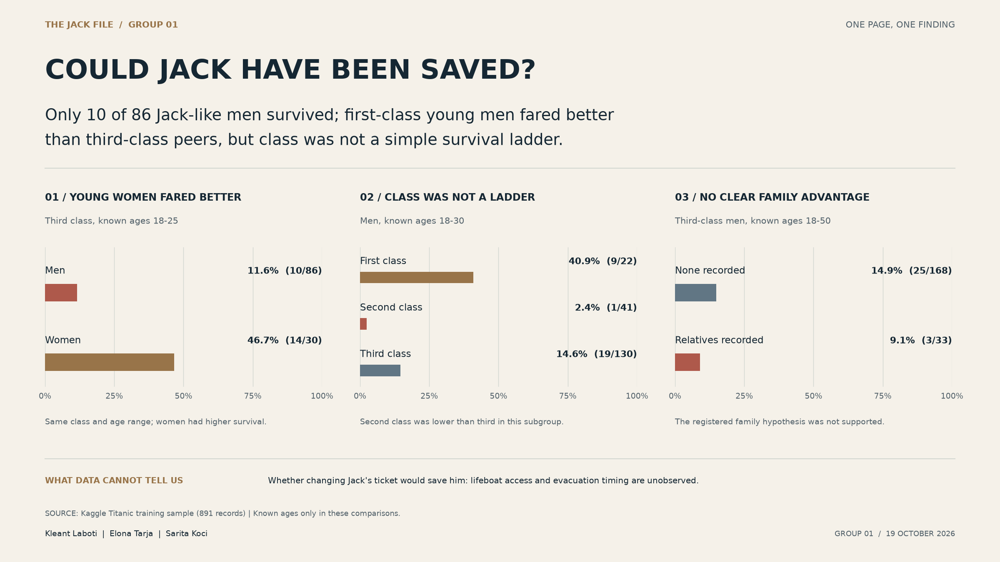

A lucky beginning.
Jack boards with his friend Fabrizio after winning third-class tickets. He is travelling with possibility, not privilege.
A FICTIONAL LOVE STORY. A REAL QUESTION.
ABOUT 20 / AN ARTIST / THIRD CLASS
A young American wins a ticket at poker and falls in love with Rose, a woman from a world of privilege. In Titanic, he helps her survive the sinking.
He never makes it home.
But did his story have to end there?
THE STORY IN FOUR MOMENTS
Jack and Rose are fictional. The ship and the disaster are not. The romance makes a much larger tragedy personal.
Jack boards with his friend Fabrizio after winning third-class tickets. He is travelling with possibility, not privilege.
She travels first class. Their relationship crosses the social boundary that the film keeps putting between them.
After the ship sinks, Rose stays on floating debris. Jack remains in the water beside her.
Rose is rescued. Jack dies before help arrives. The life they imagined together never begins.
WHY THAT ENDING STAYED WITH PEOPLE
That is our reading of the film: the grief comes from a young life cut short, a sacrifice, and the feeling that another ending was almost within reach. It is an interpretation—not a claim that every viewer reacted the same way.
THE ARGUMENT DID NOT END WITH THE CREDITS
The debate lasted long enough for James Cameron to revisit it with physical tests in National Geographic's Titanic: 25 Years Later. That experiment asks about the raft. Our project asks about the passengers.
EXPLORE THE ACTUAL DOCUMENTARY ↗Character details: James Cameron's screenplay. Film: Paramount Pictures. Jack's approximate film age is separate from our research age band.
We cannot measure the film's ending with a passenger table.
We can ask what happened to real people who resembled him.
WHY IS THERE DATA ON THIS?
There are records of real Titanic passengers. Kaggle distributes a structured version for a survival-prediction exercise. We use its training file because it includes the recorded survival outcome.
Our assignment is descriptive analysis, not model training. We ask which recorded circumstances are associated with different outcomes—and where the evidence runs out.
The 18–25 window was defined in the original research commit. It represents a group of comparable passengers, not Jack's exact age, ticket, location, or personal probability of rescue.
No. These are the 891 training records, not the complete passenger-and-crew population. Kaggle's separate test file withholds outcomes; gender_submission.csv contains example predictions, not historical survival labels. Neither belongs in our observed-survival calculations.
Source and field definitions: Kaggle's original data dictionary. Calculations use the repository's unchanged train.csv.
SAME OCEAN. DIFFERENT CIRCUMSTANCES.
Class, age, family and geography are not just column names. Each suggests a question. Each also has a limit. Choose a lens to see both.
177 missing ages. 687 missing cabins. 2 missing ports. A blank is unknown information—not a zero, not a lower deck, and not proof someone travelled alone.
COULD SOMEONE LIKE HIM SURVIVE?
Among the 86 third-class men aged 18–25 with known ages, ten survived. Survival was possible for that group. This does not tell us what would have happened to Jack.
10 survivors / 86 passengers.
A group rate. Not a verdict on one life.
Read the age range under every heading. The original hypotheses use different, explicitly stated groups.
All rates come from train.csv. Every bar uses a 0–100% scale and shows survivors / passengers. The first chart contextualizes Jack; the full adult H1 test appears below.
Among men aged 18–30, second class had only 1 survivor out of 41, below third class's 19 out of 130. The overall class ranking does not hold inside this subgroup.
A descriptive ranking reversal—not proof that second class caused harm, and not by itself proof of Simpson's paradox.
CHANGE THE PROFILE, NOT THE PAST
Change a ticket, an age window, or recorded family circumstances. See the real comparison group—not an invented alternate life.
Overlapping age windows, not separate categories. The selector changes only age; other filters still apply.
18–25: the closest Jack-like baseline. 18–30: H2, comparing first- and third-class young men. 18–50: H1 compares women and men within each class; H3 compares recorded relatives among third-class men.
The narrower window prioritizes similarity to Jack. Wider windows include more passengers but are less specific. These are design choices, not statistically optimized boundaries. Endpoints are inclusive; unknown ages cannot establish membership. A 22-year-old belongs to all three windows.
The cutoffs were recorded before outcome analysis. This fuller explanation was added later; it is not new preregistration. A shared age window does not fully adjust for age.
Read the full methodological explanation ↗
Notebook-u i shpjeguar ne shqip ↗
This is not Jack's survival probability. These are different people, not a controlled experiment. The interval does not remove missing-data bias, confounding, or unobserved evacuation conditions.
In the registered H3 group, third-class men 18–50 with recorded relatives had 3/33 survivors, versus 25/168 with none recorded. At 18–25, the counts are 3/11 versus 7/75. Try both windows. This is an exploratory sensitivity check, not a reason to rewrite H3.
ASK BEFORE YOU LOOK
The original definitions are retained. Here, “survived” means that the observed direction agrees with a descriptive hypothesis. It does not mean a statistically significant or causal result.
The original hypotheses were recorded in commit 7a423658. The new feature explorer is additional interpretation and exploration—not a retrospectively registered experiment.
THREE PROBLEMS WE CAN ACTUALLY DEMONSTRATE
177 ages are missing, unevenly across groups. Known-age comparisons may not represent those with unrecorded ages.
687 cabins are missing. For third class, 97.6% are absent. A detailed “safe deck” map would invent evidence.
Only ten first-class men aged 18–25 are recorded. Three survived. One different outcome changes the rate by ten percentage points.
The most important limit: individual lifeboat access and evacuation timing are not in this table. Changing a recorded characteristic cannot establish that Jack would have been saved.
THE STORY BROUGHT US HERE
The website tells the story. The notebook shows the work. The poster presents the required three-chart finding.
Executed code, tables, charts, decisions, and the original hypotheses.
02 / RUN ↓A self-contained notebook with the exact original dataset included.
03 / PDF ↗Exactly three charts, readable groups, and a qualified answer.
04 / VERIFY ↗Unchanged data, build scripts, automated tests, and research history.
Download the .ipynb above. In Google Colab, choose File → Upload notebook, then Runtime → Run all. The downloaded file contains the original CSV and its checksum, so it needs no repository checkout.

Explore an imagined rescue, then return to the distinction between telling a story and testing it.
COULD JACK HAVE BEEN SAVED?
Some people resembling Jack survived. Class, sex, age and recorded relationships help us ask better questions. They cannot write an individual's alternate ending.
BACK TO JACK ↑